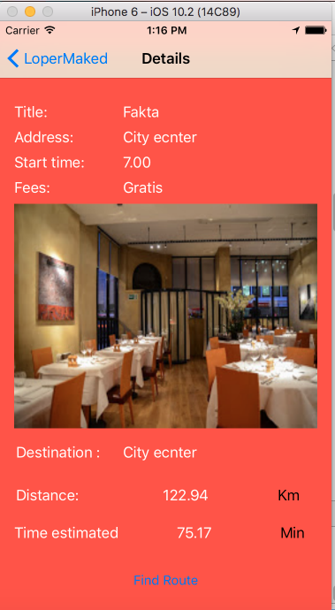
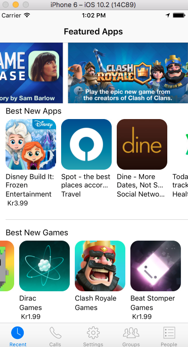
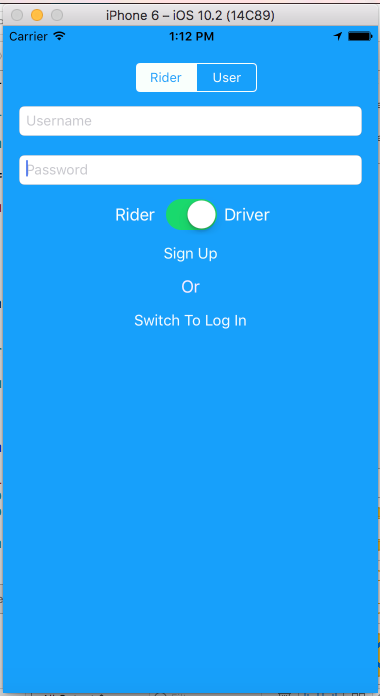

Theses apps are buid with Swift .
Swift is a new programming language for iOS, macOS, watchOS, and tvOS apps that builds on the best of C and Objective-C, without the constraints of C compatibility. Swift adopts safe programming patterns and adds modern features to make programming easier, more flexible,
and more fun. (developer.apple.com/)
This is app was built with IOS and swift 3, The idea was to leverage Corelocation and Mapkit libraries capabilities to build a LoperMarked location and details on the map with annotations . Using Mapkit Location manager the app can get the user current's position and the lopermarked address coordinates. then calculates the distance, and the ETA(Estimated time arrival), finally using Google GPS the app helps user with the direction option to reach the destination.

This is app was built with IOS and swift 3, The idea was to leverage Corelocation and Mapkit libraries capabilities to build a LoperMarked location and details on the map with annotations . Using Mapkit Location manager the app can get the user current's position and the lopermarked address coordinates. then calculates the distance, and the ETA(Estimated time arrival), finally using Google GPS the app helps user with the direction option to reach the destination.

This is app was built with IOS and swift 3, The idea was to leverage Corelocation and Mapkit libraries capabilities to build a LoperMarked location and details on the map with annotations . Using Mapkit Location manager the app can get the user current's position and the lopermarked address coordinates. then calculates the distance, and the ETA(Estimated time arrival), finally using Google GPS the app helps user with the direction option to reach the destination.
